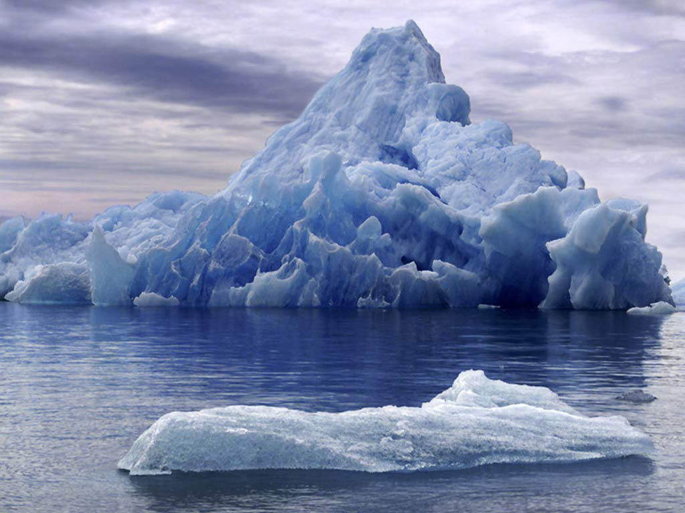

Q&A: Climate change
What is climate change and why should we be concerned about it? David Adam explains
What is climate change?
The Earth's climate has always varied, so the term climate change is now generally used to describe the changes caused by human activity - specifically, greenhouse emissions such as carbon dioxide and methane, which build up in the atmosphere and trap heat.
Is it the same as global warming?
As human activity increases the concentration of these gases in the atmosphere far beyond their natural levels, much more heat is trapped. Hence, the term climate change is often used interchangeably with global warming.
Can it be explained by natural causes?
Measurements at the Earth's surface show that average temperatures have risen by some 0.4C since the 1970s. Scientists are confident this change can be blamed on human emissions because the increase is too big to be explained by natural causes. Although natural factors such as changes in the sun and large volcanic eruptions are known to have warmed and cooled the planet in the past, these effects are not powerful enough to explain the rapid warming seen recently. Only an increased greenhouse effect caused by higher amounts of heat-trapping gases in the atmosphere can explain it.
What is the main greenhouse gas?
Water vapour in the atmosphere produces the strongest greenhouse effect, but it has been in balance for millions of years. Human emissions, though relatively small, tip that balance.
Carbon dioxide is the chief greenhouse gas produced by human activity. It is produced when we burn fossil fuels: oil, gas and coal. The level of carbon dioxide in the atmosphere is measured in parts per million (ppm).
Before the industrial revolution, the carbon dioxide level was about 280ppm. It is now 386ppm and rising by 2-3ppm each year. When other greenhouse gases such as methane are included, the total level in the atmosphere, known as the carbon dioxide equivalent, is closer to 440ppm.
What future temperature rise is expected?
Scientists say continued emissions will cause the planet to heat up further. To work out how much, they use computer models based on the programs used to predict the weather.
These models are not perfect, and struggle to simulate some features of the climate system such as clouds. To get around this, the scientists run many different versions and pool the results. The computer models predict that if emissions continue to rise at the present rate, average temperatures will most likely increase by 4C by 2100.
There are uncertainties, though - for example, the planet's oceans, forests and soils could release their massive stocks of carbon as the world warms, leading to much greater temperature rises than human emissions alone would cause.
Why are warmer temperatures bad?
Most plants and animals have evolved to live in a fairly narrow ecological niche. Some will move to find their desired conditions, others will be able to adapt. Those that cannot move or adapt will perish. Some animals, such as the polar bear, have nowhere to move to. A warmer climate will affect agriculture and water availability. Increased temperatures are also expected to limit rainfall in some regions and bring more extreme weather events such as storms to others. Sea levels will rise - gradually at first as the extra warmth works its way into the oceans and makes them expand; more quickly if the gigantic ice sheets in Greenland and west Antarctica start to break up.
How can we tackle global warming?
Scientists say the only realistic way at present is to reduce greenhouse gas emissions. How to do that - and where - is a political hot potato. Because it takes time for the heat to build up in the atmosphere, and because carbon dioxide stays in the atmosphere for a long time, there is a lag in the system, which means the effect of any changes will not be felt for decades. Put bluntly, we are headed for about another 0.5C of warming whatever we do.
What are the Kyoto protocol and the Copenhagen climate talks?
The world's only existing treaty to limit emissions, the Kyoto protocol, has had limited success, and expires in 2012. Politicians are working to develop a replacement that would include countries excluded from Kyoto, such as China, and those that refused to join, such as the US.
From December 7, environment ministers and officials will meet in Copenhagen to thrash out a successor to Kyoto. The two week event is being seen by many environmentalists as a crucial diplomatic opportunity to create an international agreement on meaningful cuts in emissions that will prevent the worst consequences of climate change.
Can renewable energy help?
The United Nations Intergovernmental Panel on Climate Change has said that we already have most of the technology we need to bring down emissions significantly. These include renewable energy sources such as windmills, geothermal and solar panels, as well as more efficient cars and power stations.
What about carbon trading?
Carbon trading is a market mechanism to achieve cuts in emissions. Countries or groups of countries (such as the EU) first agree a cap or maximum emissions level. Individual companies are then either given or must purchase carbon credits - the right to emit a certain amount of CO2. If they exceed their allowance they must purchase permits from another company that has company that has fallen short of its cap. If the cost of buying carbon credits is high enough it incentivises companies to invest in measures to reduce their emissions.
To date, the EU's emissions trading scheme has been heavily criticised for failing to reduce emissions. In the first phase, the number of permits issued was too high, sending the carbon price crashing and so removing any incentive for companies to spend money reducing their emissions. The environmentalist James Lovelock has branded Europe's carbon trading scheme a "scam".
What about carbon offsetting?
Offsetting is controversial because some people see it as an excuse not to change our behaviour. There are also concerns about whether it delivers the promised savings, as much of the market is unregulated.
What about storing the CO2 underground or blocking the sun?
One technology that would allow us to continue burning fossil fuels such as coal and oil without increasing CO2 levels in the atmosphere is carbon capture and storage (CCS). This involves extracting CO2 at power stations then pumping it underground. Critics argue the technology will prove expensive and is several years away from being proven.
A more drastic approach is so-called geo-engineering. These are major technological fixes such as seeding clouds to bounce some of the sun's radiation back into space or stimulating the growth of algae in the oceans to soak up CO2. These are much more speculative, but Barack Obama's scientific adviser, John Holdren, has said that he is open to even these drastic measures.